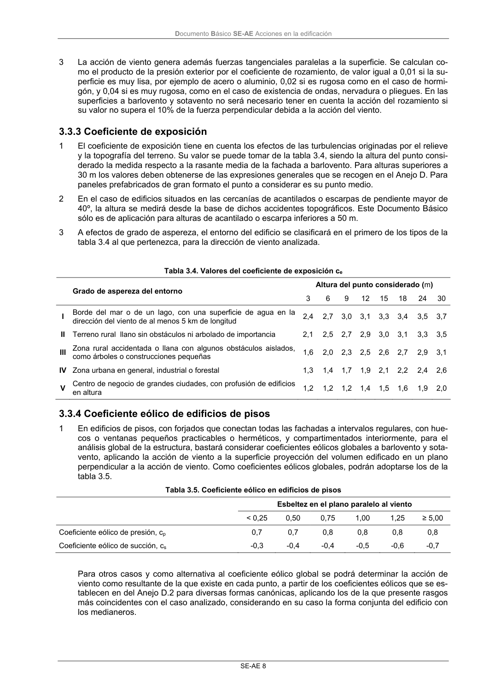

DB-SE-AE Acciones en la edificación · edición 2009-04 · capa oficial
Documento DB-SE-AE-oficial · SHA-256 del PDF 26116e5088955f0c6963a6187270cad282e1e7bf5a53a90f695c8fa50b4e4487
Copia fiel del PDF fuente · Fuente oficial
Ficha de la disposición en la fuente oficial
Formatos: JSON del segmento · Markdown
anejo D, en función del emplazamiento geográfico de la obra. ce el coeficiente de exposición, variable con la altura del punto considerado, en función del grado de aspereza del entorno donde se encuentra ubicada la construcción. Se determina de acuer- do con lo establecido en 3.3.3. En edificios urbanos de hasta 8 plantas puede tomarse un valor constante, independiente de la altura, de 2,0. cp el coeficiente eólico o de presión, dependiente de la forma y orientación de la superficie res- pecto al viento, y en su caso, de la situación del punto respecto a los bordes de esa superficie; un valor negativo indica succión. Su valor se establece en 3.3.4 y 3.3.5. 2 Los edificios se comprobarán ante la acción del viento en todas direcciones, independientemente de la existencia de construcciones contiguas medianeras, aunque generalmente bastará la considera- ción en dos sensiblemente ortogonales cualesquiera. Para cada dirección se debe considerar la ac- ción en los dos sentidos. Si se procede con un coeficiente eólico global, la acción se considerará aplicada con una excentricidad en planta del 5% de la dimensión máxima del edificio en el plano perpendicular a la dirección de viento considerada y del lado desfavorable. Documento Básico SE-AE Acciones en la edificación SE-AE 8 3 La acción de viento genera además fuerzas tangenciales paralelas a la superficie. Se calculan co- mo el producto de la presión exterior por el coeficiente de rozamiento, de valor igual a 0,01 si la su- perficie es muy lisa, por ejemplo de acero o aluminio, 0,02 si es rugosa como en el caso de hormi- gón, y 0,04 si es muy rugosa, como en el caso de existencia de ondas, nervadura o pliegues. En las superficies a barlovento y sotavento no será necesario tener en cuenta la acción del rozamiento si su valor no supera el 10% de la fuerza perpendicular debida a la acción del viento.
